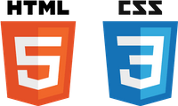
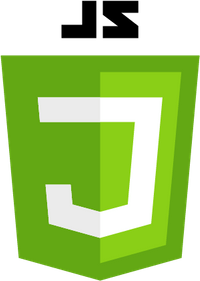
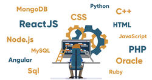

PLAN

First step - Front End. HTML, CSS, and Javascript.
Second step - Back-End. Javascript may be distant today but, with time and effort we'll be friends.


Third step - Full-Stack. The idea alone seems like a far reach but, I'll start by focusing on the first step.
Final step - continue learning. Mastery may be impossible, but if I continue to perfect learning, I'll find excellence, and thats where i want to be.
WORK EXPERIENCE
Instacart
Independant Contractor | February 2020 - Present
- Drive to indicated store and shop selected items
- Communicate with the customer regarding replacements or additions
- Deliver each order to appropriate customer
- Maintain respect and professionalism to ensure customer satisfaction
Red Rooster Harlem
Food Runner | March 2018 - August 2019
- Work alongside waitresses to ensure an excellent customer experience
- Check food quality before it leaves the pass
- Assist with food preperation
- Extensive knowledge of ingredients to prevent allergic reactions